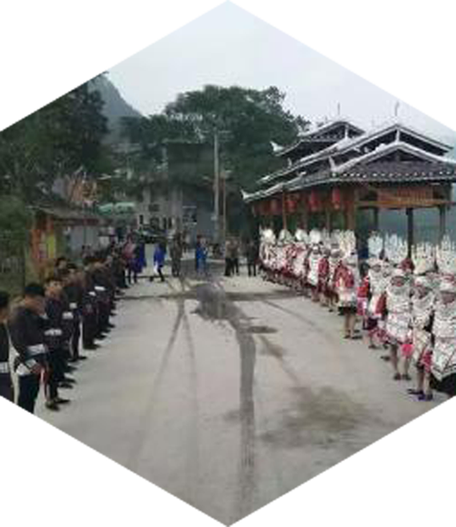
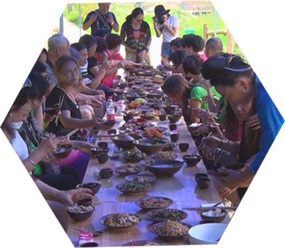
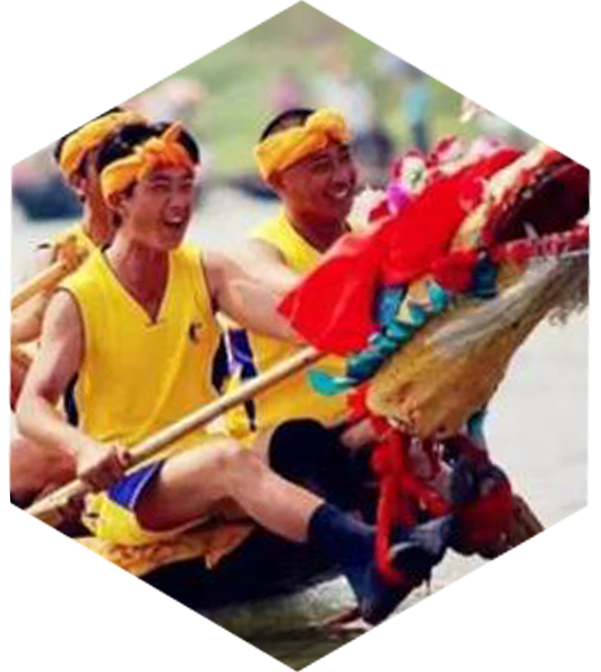
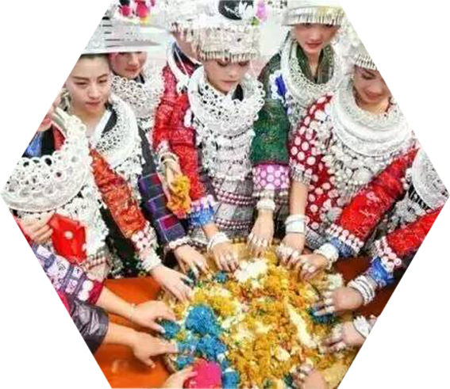

一年一度的姊妹节在台江县城与各乡镇如期举行。就在节日举行当天，令长滩村村民始料未及的事发生了，长滩村始无前例地涌进了大量游客。而令潘秀海家措手不及的事也发生了，客人在游玩与体验完长滩村的风光民俗后,酸汤鱼、腊肉、血豆腐、炒土豆 …… 苗家人最好的菜肴都上桌后，客们兴奋起来，大快朵颐享受着地道的苗家美食
长桌宴是苗族宴席的最高形式与隆重礼仪，已有几千年的历史。通常用于接亲嫁女、满月酒以及村寨联谊宴饮活动。左边是主人座位，右边是客人座位。主客相对，敬酒劝饮并对酒高歌，在这一片欢乐祥和中，早已分不出主客，每个人都融入到节日的喜庆氛围里，忘了自我，长桌宴沿着古街一字摆开，旁边坐满了当地寨老和村民、从外地赶回家乡过年的农民工，还有专程赶到苗寨过大年的中外游客......


一大二小的龙舟并排成一组，船体很长。大者为母船，苗语称“蔑瓮”，长21至24米，宽约0.7米，船中心前后共六舱，前部接有雕刻精致的五彩龙头，其中台江施洞的龙舟龙头上都有代表男根、象征祈子重男的鸟形和可能表示实现祈子求嗣、鱼水之欢的鱼形饰物。宛似牛角的龙角上常写有“风调雨顺”、“国泰民安”等吉祥语。母船翘首水面，两个角尖之间拉一根细绳子......
五彩姊妹饭纯天然食品，主要食材是糯米，采用各种野花草清取色制作而成，色彩缤纷、晶亮芬香，芳香可口。还具有明目健身，滋补强身功效，是苗族姊妹节日期间与亲朋好友共享与相赠的特殊食品。五彩姊妹饭是苗家青年男女谈情说爱重要信物，女孩子赠送男孩子姊妹饭，如果饭里包得有辣子、大蒜等，则说明女孩不喜欢男孩；如果饭里包得有一双筷子，则双方之间可以谈婚论嫁了。五彩姊妹饭是苗家姑娘亲手制作，为满足游客的需要，在台江姊妹街的阿旭食品有......

下滑查看更多
︾